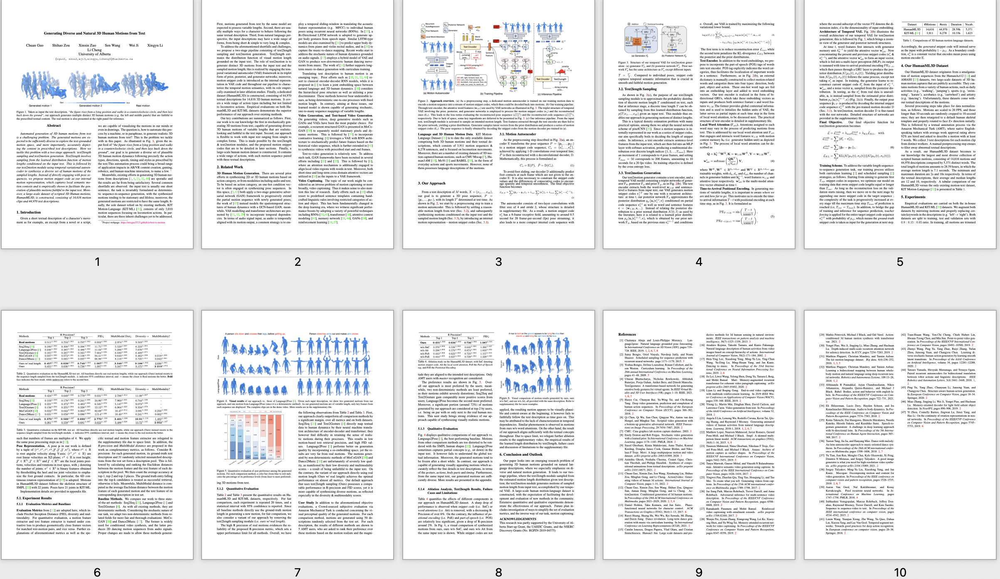

|
Chuan Guo
|
Shihao Zou
|
Xinxin Zuo
|
Sen Wang
|
Wei Ji
|
Automated generation of 3D human motions from text is a challenging problem. The generated motions are expected to be sufficiently diverse to explore the text-grounded motion space, and more importantly, accurately depicting the content in prescribed text descriptions. Here we tackle this problem with a two-stage approach: text2length sampling and text2motion generation. Text2length involves sampling from the learned distribution function of motion lengths conditioned on the input text. This is followed by our text2motion module using temporal variational autoencoder to synthesize a diverse set of human motions of the sampled lengths. Instead of directly engaging with pose sequences, we propose motion snippet code as our internal motion representation, which captures local semantic motion contexts and is empirically shown to facilitate the generation of plausible motions faithful to the input text. Moreover, a large-scale dataset of scripted 3D Human motions, HumanML3D, is constructed, consisting of 14,616 motion clips and 44,970 text descriptions.
Paper
|
 |
|
Generating Diverse and Natural 3D Human Motions from Texts
Chuan Guo, Shihao Zou, Xinxin Zuo, Sen Wang, Wei Ji, Xingyu Li, Li Cheng
CVPR, 2022
[Paper]
[Bibtex]
|
Demo Video
Acknowledgements
This research was partly supported by the University of Alberta Start-up Grant, the UAHJIC Grants, and the NSERC Discovery Grants (No. RGPIN-2019-04575). This webpage template was borrowed from here.
|
{kind=link}